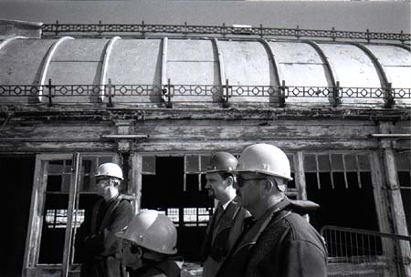
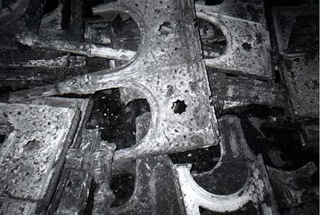
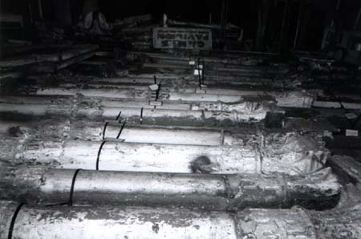

|
Listening to the lecture
We were glad of the hard hats, not because of falling debris, because of the constant danger from bolshy gulls and shitting pigeons. This was such a high promenade that on the other side of its (surprisingly low) rails was little balcony to catch anything which fell off the edge. |
| Rescuing the ironwork Part of the problem is the sheer weight of all that cast iron, which looks so delicate, but which is actually heavy enough to brain an ox, and therefore endlessly trying to slide into the sea. This pile of rescued star-patterned arches probably isn't all of them; they'll need to recast some. |
| Games Pavilion: entrance free As well as the carefully catalogued iron pillars, arches, window frames, railings, seats, roof-pieces and decorations, was this sign, dating from rather later, propped up in the dim. It was rather expensive getting out to West Pier; but then, but then ... |
|
Plans for the future The plan, as we heard it then, was to re-instate the original concept of a
posh pier for nice types. At the far end, a swanky restaurant and art gallery, maybe even a little theatre (or, more likely,
a stage in the corner of the restaurant). The stunning ballroom apparently has amazing acoustics, and there was a big move to
reclaim it as a concert venue. However, that's not very commercial, and there was acceptance that they may have to settle for other
uses, or perhaps leave it as an adaptable hall space that could become a theatre, art gallery, or even a small ice rink. Even then, a
lot of the orginal structure was missing, and yet the plan was to reconstruct (as far as modern safety standards would allow) the
original Victorian pier, in all its over-decorated, flimsy-looking glory. This was possible because of the cast iron method, where
a structure is made from many pieces cast to the same mould. As long as they had a sample, they could replace any pieces that were
decayed or lost. But then, they were only working under the water, and now? I really don't know. Perhaps you should go and look for yourself.
Start all over again. |